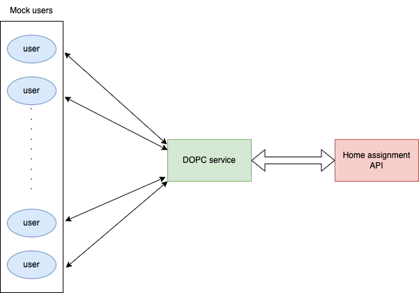
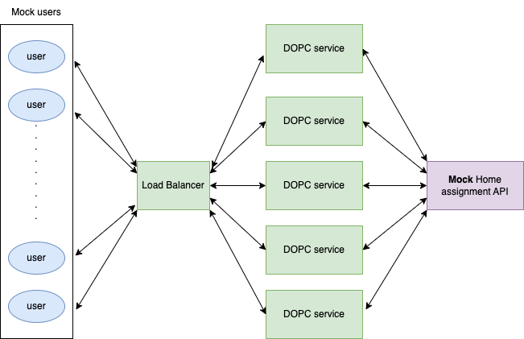

Author: Danmei Huang
Date: 2025-01-25
A scalable service that calculates delivery prices based on distance and cart value. The service includes a load balancer to distribute requests across multiple instances.
This document only explains how to run the service. The design document of this project is given in the DOPC_design_document.html file.
Python 3.10+
Required packages:
pip install aiohttp pydantic tomli.
├── README.md
├── config.toml # Configuration file
├── server.py # DOPC server (call either dopc_service.py or load_balancer.py, set by `use_balancer_flag` in `config.toml`)
├── dopc_service.py # A DOPC service, can run independently
├── load_balancer.py # Load balancer
├── mock_user_requests.py # User request simulator for integrate test
├── mock_home_assignment_api.py # Home Assignment API simulator for integrate test
├── test_rate_limits.py # Test rate limits of Home Assignment API
├── DOPC_design_document.md # Design document of DOPC service
├── images/ # Image files directory
└── logs/ # Service logs directoryEdit config.toml to customize settings:
[general]
host="localhost"
use_balancer_flag= false # if start load_balancer.py or dopc_service.py
dopc_end_point='/api/v1/delivery-order-price'
dopc_port = 8000
[dopc_service]
mock_home_assignment_flag = false # if use mock_home_assignment_api.py
n_max_request=5000 # maximum number of user requests that can be handled per dopc service process
base_api_url = "https://consumer-api.development.dev.woltapi.com/home-assignment-api/v1"
mock_base_api_url = "http://localhost:10000/home-assignment-api/v1"
[dopc_balancer]
service_port_start = 49152 # Using dynamic port range, port for dopc services
num_services = 5 # number of dopc services
In the simple case, we use the wolt home assignment API.
Start a single DOPC service
python dopc_service.pyOr run server.py (call either dopc_service.py or load_balancer.py, set by use_balancer_flag in config.toml)
Testing the Service
2.1 Single user request test using curl:
curl "http://localhost:8000/api/v1/delivery-order-price?venue_slug=home-assignment-venue-helsinki&cart_value=2000&user_lat=60.17094&user_lon=24.93087"Or paste the link to a web browser.
We expect to see the json response given by the DOPC service.
2.2 Batch user request test:
In a new terminal, type the following command to simulate 50 users each sending 2 requests, 0.5s delay between requests.
python mock_user_requests.pyWe expect to see the following output:
Starting simulation with 50 users...
User 2 | Rate Limited | Time: 0.304s
User 22 | Rate Limited | Time: 0.350s
....
User 14 | Distance Exceeded | Time: 1.114s
User 15 | Status: 200 | Time: 1.122s | Price: 3065 cents
Simulation completed in 2.87 seconds
=== Test Summary ===
Total Users: 50
Requests per User: 2
Total Requests: 50
Response Breakdown:
✅ Successful: 13 (26.0%)
üìç Distance Exceeded: 9 (18.0%)
⏳ Rate Limited: 28 (56.0%)
❌ Other Errors: 0 (0.0%)
üîå Connection Errors: 0 (0.0%)
Timing Statistics:
Average Response Time: 0.619s
Min Response Time: 0.304s
Max Response Time: 1.122sUse CTRL-C to stop the request.
The whole process is shown in the figure below:

In the production case, we will start a load balancer, which starts 5 DOPC services. We also use mock home assignment API to avoid rate limiting by the actual home assignment API.
Modify the config.toml file
Set use_balancer_flag and mock_home_assignment_flag to true in the config.toml file.
Start Mock Home Assignment API
In a terminal, type the following command:
python mock_home_assignment_api.pyStart Load Balancer
In a new terminal, type the following command:
python load_balancer.pyThis will automatically start 5 DOPC services.
Or run server.py (call either dopc_service.py or load_balancer.py, set by use_balancer_flag in config.toml)
Testing the Service
In a new terminal, type the following command to simulate 50 users each sending 10 requests, with 0.1s delay between requests.
python mock_user_requests.py --users 50 --delay 0.1 --requests 10We expect to see the following output:
Starting simulation with 50 users...
User 1 | Status: 200 | Time: 0.069s | Price: 2390 cents
User 5 | Status: 200 | Time: 0.070s | Price: 2490 cents
......
User 22 | Status: 200 | Time: 0.008s | Price: 2490 cents
User 43 | Status: 200 | Time: 0.007s | Price: 2890 cents
User 47 | Distance Exceeded | Time: 0.007s
User 8 | Status: 200 | Time: 0.008s | Price: 1390 cents
^C
Simulation completed in 22.45 seconds
=== Test Summary ===
Total Users: 50
Requests per User: 10
Total Requests: 400
Response Breakdown:
✅ Successful: 330 (82.5%)
üìç Distance Exceeded: 70 (17.5%)
⏳ Rate Limited: 0 (0.0%)
❌ Other Errors: 0 (0.0%)
üîå Connection Errors: 0 (0.0%)
Timing Statistics:
Average Response Time: 0.026s
Min Response Time: 0.004s
Max Response Time: 0.171s
Simulation stopped by userUse CTRL-C to stop the request.
The whole process is shown in the figure below:
